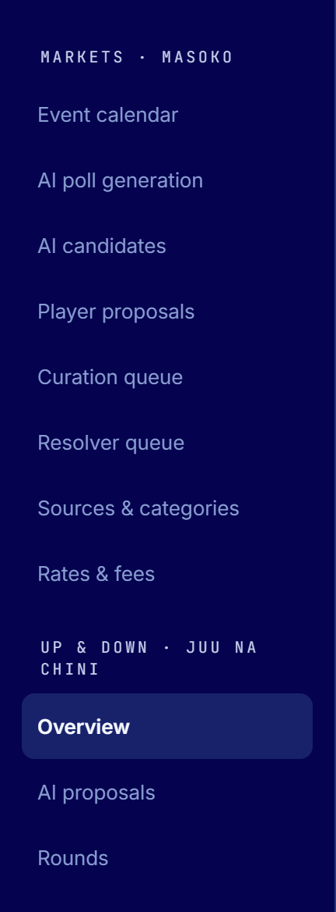
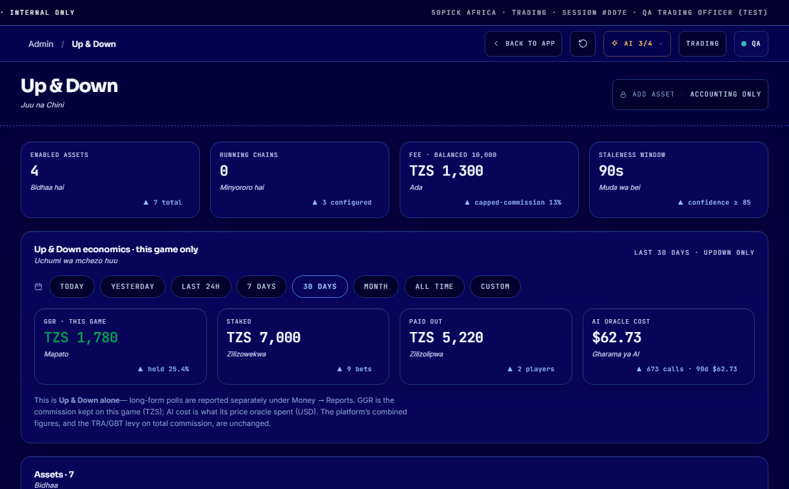
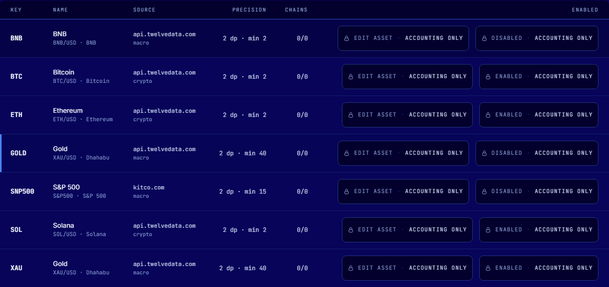
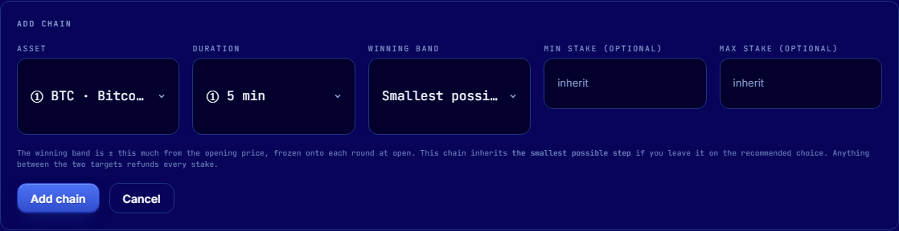
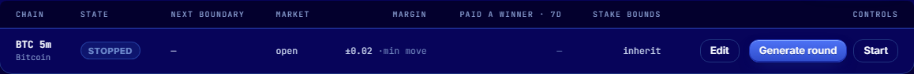
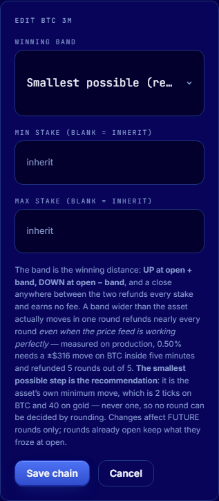

For 50pick staff who run the Up & Down game. No technical knowledge required.
Operating rules — read before you begin
Gold trades only on certain days. Gold and currency pairs are shut every weekend:
open Monday 01:00 EAT, closed Saturday 00:00 EAT. While a market is shut the platform
will not open or settle a round on it, and the chain reads market shut. That is correct
behaviour, not a fault.
Crypto — BTC, ETH, SOL — trades 24 hours a day, 7 days a week, including public holidays.
Gold cannot run shorter than 15 minutes. The duration list greys 3, 5 and 10 minutes for
gold and states the reason. Gold’s price feed can disagree with itself by up to $0.87 at a
single instant — more than gold typically moves in five minutes — so a short gold round would be
decided by which reading arrived rather than by the market.
Crypto may run any length: 3, 5, 10, 15, 30 or 60 minutes.
Betting closes before the round ends. The final 20% of every round accepts no
bets, never less than 30 seconds. A 5-minute round closes betting with 60 seconds remaining.
Near the close the result is largely known. Without this window, a player watching the price
could bet on an outcome already visible and take money from those who bet at the start. The player’s
card explains this, and the countdown relabels itself from “betting closes in” to “result in”.
The winning band is the smallest possible step, not a percentage. The recommended
setting, Smallest possible, uses the asset’s own minimum move: $0.02 on Bitcoin,
$0.40 on gold. Roughly 99 rounds in 100 then pay a winner.
At 0.50% Bitcoin must move ±$316 within five minutes; in testing that refunded every round. A
refunded round earns no commission, so a wide band does not increase revenue — it removes it.
One account may hold only one side of a round. A player cannot back UP and DOWN on the
same round. Holding both sides is not a bet; it is a way to move funds while paying only the
commission, and on an unbalanced pool it can profit regardless of the result.
A round that closes late still settles. Prices come from a dated one-minute record,
so the price for 13:52 remains available an hour later. If a close is delayed the platform returns to
the correct minute and settles, up to 24 hours. Refunding a delayed round is no longer
necessary.
Every refund states its real reason — six distinct reasons, in English, Swahili and
Chinese, on the card, the round page, the settlement proof, the notification and the inbox.
Never describe a refund as “the price did not move” unless that is the reason given on screen.
Rounds are produced manually. An operator presses Generate round; nothing runs on
a timer. While the product is new, a round an operator is watching is worth more than a schedule
nobody is watching. Do not start a chain and leave it.
If only one side bets, everyone is refunded. A round needs money on UP and DOWN to
produce a winner. A one-sided round returns every stake and earns nothing.
Favour a few chains with players on them over many empty ones.
DO NOTDo not run gold below 15 minutes. Do not widen the band.
Do not open a chain nobody is playing. These are the three ways this game loses money, and all
three appear harmless.
1 · What the game is
A player bets whether a price — Bitcoin, Ethereum, gold — will be higher (UP) or
lower (DOWN) at the end of a short window. One window is a round.
1 · Round opensThe price of the last completed minute is read and frozen as the opening price.
2 · Players betUP or DOWN, until betting closes in the final 20%.
3 · Round closesThe price for the closing minute is read the same way.
4 · SettlementUP wins, DOWN wins, or nobody wins and every stake is returned.
THE CENTRAL IDEARounds settle against a dated one-minute record, not
“the price now”. Every minute of the trading day has a permanent opening price. “The price at
13:52” means “the opening price of the minute labelled 13:52”, and that value never changes. It can
therefore be re-checked at any time — which is why a delayed round can still be settled honestly,
and why a disputed result can be shown to the player exactly as it was decided.
2 · The price provider, and how it works in our favour
Capability
Why it is to our advantage
The past is readable a dated record, not a live tick
A live price answers only “what is it now”; miss the instant and the value is
unrecoverable, so any delay had to be refunded. A dated record is the same value hours later, so
a late close settles correctly and any player who disputes a result can be shown the exact
minute used.
A whole window costs one credit 1–5,000 minutes, one charge
Six round lengths on a single asset require roughly 672 separate readings per day
against a plan of about 800 — unworkable one at a time. Requesting a window instead reduces that
to 24–96. This is what makes 3-minute rounds viable at all.
Real-time crypto, currencies and metals
Covers every asset the product needs. It does not cover stock indices, and shares
outside the United States are end-of-day only — a once-daily price cannot settle a short round,
so no non-US share may be used as an Up & Down asset.
TIMING A minute’s record is published a few seconds after that
minute ends — about 10 seconds for Bitcoin, Ethereum and gold, and about 60 seconds for
Solana. This is why Generate round takes its opening price from the last completed
minute, and why the platform waits up to two minutes before treating a record as missing. Nothing is
required of you; it is simply why generation can take a few seconds to answer.
3 · The assets, and what is distinct about each
Asset
Band
Lengths
Trading hours
What is distinct about it
BTC Bitcoin READY
±$0.02 2 ticks
3 · 5 · 10 15 · 30 · 60
24 / 7
Moves whole dollars within three minutes, so almost every round produces a clear winner, and
its two price readers agree to the cent. Its band therefore only has to clear rounding.
Begin here, and use it for any 3-minute round.
ETH Ethereum READY
±$0.02 2 ticks
3 · 5 · 10 15 · 30 · 60
24 / 7
Behaves like Bitcoin at a lower price, so the same $0.02 band is a slightly larger share of
the price and a very quiet 3-minute window is marginally more likely to refund. Reliable at 5
minutes and above.
XAU Gold CARE
±$0.40 40 ticks
15 · 30 · 60 only
Mon 01:00 EAT → Sat 00:00 EAT
The asset requiring most care. Its feed can differ from itself by $0.20 at one instant
and up to $0.87 across a minute boundary, so its band is twenty times Bitcoin’s. It
is also the only asset that closes, and at weekends the provider continues to publish flat filler
prices — which is why weekend gold is refused outright rather than trusted.
SOL Solana NOT YET
±$0.02 2 ticks
—
24 / 7
Do not offer Solana to players yet. Its price records arrive around 60 seconds late
rather than 10. The current reader is expected to handle that, but it has not yet been confirmed
with money on a round. Staff testing first.
BNB OFF
±$0.02
—
24 / 7
Disabled, and configured under the wrong calendar so the weekend closure of gold would be
applied to a coin that trades daily. Leave it disabled.
SNP500 S&P 500 UNUSABLE
—
—
—
Never enable. Stock indices are not carried by our price plan, and this row’s source is
a web page rather than the price feed. Every round would refund. It is retained only so that it
is not re-created.
GOLD duplicate OFF
±$0.40
15 · 30 · 60
Mon–Sat
A second gold row, disabled. Two entries in the asset list read “Gold”. Use
XAU, the enabled one. Enabling both would split gold across two names in every
report.
HOW MUCH COUNTS AS A CHANGEA movement of one band or more decides
the round. On Bitcoin that is 2 cents, and a normal 3-minute move is hundreds of times
larger — which is why almost every round pays. On gold it is 40 cents, because the feed’s own
uncertainty reaches 20 cents and the band must clear it twice over. A smaller band on gold would
award rounds to whichever reading arrived first.
4 · How a round resolves
4.1 · The two targets, frozen at open
tick = 0.01 the asset's smallest price step, at 2 decimals
band = the LARGER of: base x margin% the percentage, if one is set
minMoveTicks x tick the asset's minimum move
UP target = base + band
DOWN target = base - band
On the recommended Smallest possible setting the percentage is zero, so the band is always
the asset’s minimum move. Both targets are written onto the round at open and never
recalculated: a later change of settings cannot alter a round players have already bet on.
Example — Bitcoin, 5 minutes
base 63,856.00
band 2 ticks x 0.01 = 0.02
UP target 63,856.02 DOWN target 63,855.98
4.2 · The outcome
closing price >= UP target -> UP wins
closing price <= DOWN target -> DOWN wins
anything between the two -> VOID: every stake refunded in full, no commission
Same round
closing price 63,832.00 which is <= 63,855.98 -> DOWN WINS
4.3 · The money
Up & Down is a pool game: all stakes form one pot, and the winning side shares it in
proportion to each stake. Commission is 13%, never more than one third of the smaller
side.
pool = UP money + DOWN money
smaller = whichever side holds less money
commission = 13% x pool
ceiling = 33.33% x smaller
fee = the SMALLER of commission and ceiling
net pool = pool - fee
a winner's payout = round( their stake / winning side's total x net pool )
WHY THE CEILING EXISTSIt guarantees a winner can never receive
less than they staked. Because the fee cannot exceed a third of the smaller side, the net pool is
always at least as large as the winning side, so every winner receives at least their stake. Where
that would not hold, the platform refuses to settle rather than pay a winner less than they
put in. You will never have to explain such a case, because it cannot occur.
A · a balanced round
UP 500 + DOWN 500 pool 1,000 smaller 500
commission 13% x 1,000 = 130
ceiling 33.33% x 500 = 166.67
fee min(130, 166.67) = 130 net pool 870
DOWN wins; its backer staked 500 of the 500 on DOWN:
payout = 500/500 x 870 = 870 commission retained 130
B · an unbalanced round, showing the ceiling apply
UP 900 + DOWN 100 pool 1,000 smaller 100
commission 13% x 1,000 = 130
ceiling 33.33% x 100 = 33.33
fee min(130, 33.33) = 33.33 CAPPED net pool 966.67
If DOWN wins, its single 100 backer receives 966 - nearly ten times the stake.
If UP wins, the 900 receives 966. Either way, above the stake.
4.4 · When betting closes
lead = the LARGER of ( 20% of the round , 30 seconds )
betting closes at = closing time - lead
Round length
3 min
5 min
10 min
15 min
30 min
60 min
Betting closes with … remaining
36s
60s
2m
3m
6m
12m
At that moment the player’s buttons are disabled, the card states why, and the estimate
“× 1.4 est.” becomes an exact figure — once the pool is frozen, each side’s payout is
known precisely.
4.5 · Permitted round lengths
a length is permitted only if it divides evenly into 1440, the minutes in a day
3 · 5 · 10 · 15 · 30 · 60 -> permitted
4 · 7 · 45 -> refused
A length that divides the day starts every round on a clean clock mark, the same marks each day.
Several lengths then share boundaries, so one price reading serves many rounds — the saving
described in section 2, and section 5 shows a real provider response.
4.6 · If a price cannot be read
"not published yet", within 120 seconds -> no attempt consumed; retried
retries at 15s, 45s, then 120s, to 4 real attempts
nothing after 390 seconds -> VOID, every stake refunded
a delayed close, up to 24 hours later -> the correct minute is read and the round SETTLES
None of this requires action. It is documented so that when a round reads confirming price
for a minute or two, you know it is retrying by design.
5 · How the price actually arrives
The platform asks the provider for a window of one-minute records. Each record carries the
minute it belongs to and four prices; the platform uses the open, because that is the single
value that identifies “the price at that minute”. This is a genuine response for Bitcoin:
The round stores the record it used, so any result can be re-checked later against the same
minute. Nothing is inferred, averaged or estimated.
5.1 · Why nobody wins sometimes — the four causes
“Nobody won” always has one of four causes, and they need opposite responses. The reason is
recorded on the round and shown to the player.
Cause
Where it comes from
Your response
The price did not travel one full band
Real market behaviour. The close landed between the two targets, so neither side reached a
winning boundary.
Nothing, if it is rare. If it is common on that chain, the band is too wide for the asset over
that length — set it to Smallest possible.
Only one side bet
Not a price problem at all. With no money opposing, there is no pool to pay a winner from.
Consolidate players onto fewer chains. This is the most common cause in a quiet hour.
The price could not be read
The provider did not answer within the deadline, after four attempts across roughly six
minutes.
Report it. If it repeats, stop the chain — players are safe, they are being refunded.
The market was shut
A gold round reached the weekend. The platform refuses before it even asks for a price.
Nothing. Run crypto at weekends.
5.2 · Two real rounds, side by side
A CLEAR WINNER — Bitcoin, 5 minutes
open 63,856.00 band ±0.02 targets 63,856.02 / 63,855.98
close 63,832.00 moved 24.00 — about 1,200 times the band
result DOWN. Pool 1,000, commission 130, the winning 500 paid 870.
This is why the smallest band works: Bitcoin routinely moves hundreds of times the distance
needed, so the result is unambiguous and a winner is paid.
NOBODY COULD WIN — gold, Saturday 1 August, four consecutive minutes
provider response, verbatim:
12:01 open 4042.68240
12:02 open 4042.68589
12:03 open 4042.68428
12:04 open 4042.68445
total movement across four minutes: 0.0035
gold's band: 0.40 — 114 times larger
=> ANY gold round over this period refunds. Every one.
THIS IS WHY WEEKEND GOLD IS REFUSED Note that the provider answered
"status": "ok" and returned prices that look entirely normal. Nothing in the response
says the market is closed. Those are filler values — gold is not trading, so the price barely
changes, and a round run against them would refund every single time while appearing to work
perfectly. The platform therefore blocks weekend gold using its own trading calendar rather than
trusting the feed to say so.
5.3 · Why you sometimes cannot create a round right now
When Generate round refuses, it creates nothing at all — no round, no stakes, nothing to
undo. These are all the reasons, in the order you will meet them.
What you see
Why
What to do
Could not read a price, immediately after a minute turns
A minute’s record is published a few seconds after that minute ends — about 10 seconds
for Bitcoin, Ethereum and gold, 60 for Solana. Press Generate at :05 past the minute and the
record you need does not exist yet; at :40 it does. The platform looks back up to three completed
minutes before giving up.
Wait fifteen seconds and press again. This is the most common refusal and it is not a
fault.
Market shut on a gold chain
Between Saturday 00:00 and Monday 01:00 EAT. Checked before any price is requested, so no
provider credit is spent.
Wait for Monday, or run crypto.
Gold offers no 3, 5 or 10-minute option
Gold is limited to 15 minutes and above. The duration is greyed with the reason.
Choose 15, 30 or 60 — or choose Bitcoin for a short round.
The asset is not in the list
It is disabled. A disabled asset cannot produce rounds.
Ask the owner to enable it — that is an accounting control.
Could not read a price, repeatedly, on every asset
The provider is unreachable, the daily credit allowance is exhausted, or the price key is
missing.
Report it. Do not keep pressing — each attempt spends a credit.
A round already exists for that boundary
One round per chain per clock mark; a second cannot be created on the same minute.
Wait for the next boundary.
6 · Where it lives, and who may do what

Up & Down is a separate game from the polls, with its own section in the sidebar:
UP & DOWN · JUU NA CHINI. It has three screens — Overview (assets and the
chains that produce rounds), AI proposals, and Rounds (every round that has run).
Up & Down rounds do not appear under Markets → Curation queue; that section
is for long-form polls.
Role
May
Trading officer
Add, edit, start, stop and Generate chains; void a stuck round.
Accounting / Owner
All of the above, plus add and edit assets and change product settings.
A control marked 🔒 ACCOUNTING ONLY is restricted by design.
Assets determine where a real money price comes from, so they are deliberately not a trading-desk
control. Ask the owner rather than seeking a way around it.
7 · The Overview screen

Top row: assets enabled, chains running, the commission on a balanced TZS 10,000 pool, and
the staleness window — how fresh a price must be, currently 90 seconds.
Centre: this game’s money over the period selected.
Below: the assets and the chains.

PRECISION states the band: 2 dp · min 40 means prices carry two decimals and
gold’s minimum move is forty of them — ±$0.40. Note the two entries reading “Gold”: use
XAU, the enabled one. Every control here shows 🔒 ACCOUNTING ONLY to a
trading officer.
8 · Every field, and what to enter
8.1 · Add chain

① beside an option means ready; ② usable with a caution; ③
unusable — greyed out with the reason shown rather than hidden, so it is always clear why,
for example, gold offers no 5-minute option.
Field
Enter
Meaning, and the consequence of getting it wrong
Asset
① BTC · Bitcoin
Which price the round follows. A list, never typed. ③ entries cannot be selected.
Duration
① 5 min
Round length; only permitted lengths appear. Changing the asset re-checks the list — select
gold and the short lengths grey out immediately with the reason. 5 minutes is the best length
to learn on: long enough to take bets, short enough to see the result while watching.
Winning band
Smallest possible
How far the price must move for a side to win. Keep the recommendation. The remaining
options exist for a long round on a slow asset:
· Smallest possible — the asset’s minimum move; about 99 rounds in 100 pay.
· Narrow · 0.02% — roughly 1 round in 3 refunds.
· Wide · 0.05% — most rounds refund.
· Very wide · 0.50% — almost every short round refunds and earns nothing.
Min stake
leave blank
Blank inherits the product setting, TZS 500. Set it only to raise the floor on one chain.
Max stake
leave blank
Blank inherits TZS 1,000,000. Lower it on a new chain to limit exposure while it is unproven.
WHY THERE IS NO 0.15% OPTION On Bitcoin at $63,856 a 0.15% band is
±$95.78 — the price must travel almost a hundred dollars within the round for anyone to win.
Over five minutes it usually does not, so nearly every round would refund and earn nothing. The list
offers only values that mean something: the minimum move, 0.02%, 0.05%, and 0.50% retained as a
clearly labelled illustration of too wide. A wider band does not produce a larger margin; it
produces none.
8.2 · The chain row and its controls

STATE stopped or running · NEXT BOUNDARY when the next round would open ·
MARKET whether the asset is trading now — gold reads shut at weekends ·
MARGIN the winning band; ±0.02 ·min move is the recommended setting and means
two cents, not “no band” · PAID A WINNER · 7D the share of the last week’s rounds that
actually paid someone, with — for no rounds yet.
Control
Effect, and when to use it
Generate round
Creates one round now and opens it for betting — your principal control. It reads the
opening price from the last completed minute; if no price can be read it refuses and creates
nothing, so there is never a round to unwind.
Start / Stop
Arms the chain to produce rounds on the clock. Keep chains stopped for now and use
Generate. Stop allows open rounds to finish normally, so no player is left holding a bet.
Edit
Changes the band and stake bounds, for future rounds only.

The Edit panel opens within the chain’s own row, so its fields stack. The band is the
same list as the Add form; it cannot be typed here either.
Inherit follows the product setting, so changing that one setting changes every chain
that inherits it. The other choices override this chain alone.
Changes apply to future rounds only. A round already open keeps the band frozen at its open —
otherwise the rule a player bet under could be changed after the bet.
8.3 · Product settings — Accounting / Owner only
Setting
Current
Effect, and the consequence of changing it
Reading method
Feed
How a price is obtained. Feed is the price provider. Simulated invents prices
and must never be used with real money; it requires you to type SIMULATED to
confirm, which is the signal to stop.
Feed provider
Dated bars
The most consequential setting on the page. Dated records are what allow a late close to
settle rather than refund. The older live-quote option remains only as an emergency fallback.
Do not change without the owner.
Fallback margin
0.00%
What a chain inherits when its band is set to Inherit. 0.00% means the asset’s minimum
move, not “no band”. Raising it widens the band on every inheriting chain at once.
Staleness
90 s
How old a price may be and still be accepted. Lower is stricter; too low and valid readings
are refused and rounds refund.
Confidence floor
85
How certain a reading must be before money is settled on it.
Max attempts
4
Real attempts to read a price before the round refunds. A “not published yet” answer within
120 seconds is not counted.
Default min / max stake
500 / 1,000,000
The TZS bounds every chain inherits.
8.4 · Add asset — Accounting / Owner only
Field
Example
Meaning
Asset class
crypto
Determines the trading calendar. crypto is 24/7; every other class follows the
gold and currency week and closes at weekends. It is locked to the symbol, because setting it
wrongly once applied a weekend closure to a coin that trades daily.
Symbol
① BTC/USD
A list of only the symbols our price plan carries. A symbol the feed does not hold produces
rounds that refund indefinitely, which is why it is not typed.
Key
BTC
Your short name. Never renamed — every report groups by it.
Name EN / SW
Bitcoin / Bitcoin
What players see, in English and Swahili.
Decimals
2
Decimal places carried by the price. Sets the size of one tick.
Min move (ticks)
2 · gold 40
The band, in ticks. 1 is not accepted: a one-tick band is the size of the rounding
error on the price itself, so the round would be decided by rounding rather than by the market.
The correct figure is measured per asset — see section 3.
Price source URL
https://api.twelvedata.com/quote
The approved provider address. Must be https://, and its host must already be
approved under Sources & categories. The path is not significant; the reader supplies
its own.
9 · Your first live round
Up & Down → Overview. Confirm BTC is enabled and reads 2 dp · min 2.
+ Add chain → Asset ① BTC · Bitcoin → Duration ① 5 min →
Winning band Smallest possible → stakes blank → Add chain. It appears
STOPPED, which is correct.
Confirm MARKET reads open and MARGIN reads ±0.02 ·min move.
Press Generate round and wait for the round to appear. If it refuses with could not
read a price, wait fifteen seconds and press again — you were inside the few seconds before
the minute’s record was published.
Open 50pick.tz/updown as a player. Your round is on the 5 min tab; the board opens
on 3 min by default, so a 5-minute round is not missing — the tab is wrong.
Place a small bet on UP and watch VOL increase. From a second account bet
DOWN; both sides are required or the round refunds.
With 60 seconds remaining, watch the buttons disable, the wording change from betting closes
in to result in, and the estimate become an exact figure.
At the close the card shows the result. In Rounds, check the outcome, the stake, the
number of players and the settlement time.
Confirm the winner’s wallet increased by the amount the card promised. It will agree exactly.
10 · Refunds — the six reasons, and what to tell a player
A refund is neither a loss nor an error: the player receives their whole stake and no commission
is taken. The reason is already on the player’s screen, in their own language. Read it before
answering.
Reason shown
What happened
What to say
Price did not move enough
The close landed between the two targets. Uncommon on the recommended band.
“The price finished inside the band, so neither side won. Your full stake is back.”
Nobody took the other side
Only UP or only DOWN held money, so there was no pool to pay from.
“Nobody bet against you, so there was nothing to win and nothing to lose. Your stake is
back in full.” Never describe this as the price not moving.
Price could not be read
The provider did not answer in time — our issue, not the player’s.
“We could not confirm the closing price, so everyone was refunded rather than guess.”
Market was shut
A gold round met the weekend closure.
“Gold does not trade at weekends, so the round could not be settled and everyone was
refunded.”
Cancelled by us
Staff voided it. The reason entered is recorded permanently.
The truth. Always give a real reason when voiding.
Round expired
No price could be read within the deadline.
“We ran out of time to confirm a price, so every stake was returned.”
NEVERNever quote a price the platform has not confirmed. Where
a screen shows a dash, that is the honest answer. Do not supply a figure from elsewhere — the round
did not settle against that source and the player was never told it would.
11 · Daily check
Rounds — are recent rounds resolving UP or DOWN rather than a run of refunds?
PAID A WINNER · 7D per chain. On the recommended band this should be high. A low figure
caused by unreadable prices is a technical issue — report it. A low figure caused by the price
not moving means the band is too wide for that asset and length.
MARKET — gold reads shut at weekends. Expected.
Both sides betting? A chain whose rounds keep refunding for want of an opposing side has
no audience. Stop it and consolidate players onto a busier chain.
Money — staked and paid out are consistent with the day’s activity.
12 · If something looks wrong
What you see
What it means
What to do
Generate reports could not read a price
Pressed within the few seconds before the minute’s record was published. Nothing was created.
Wait fifteen seconds and press again. If it fails three times, report it.
Gold chain reads market shut
Between Saturday 00:00 and Monday 01:00 EAT.
Nothing — correct behaviour. Run crypto over the weekend.
Rounds keep refunding for want of an opposing side
Only one side is betting.
Fewer chains, more players per chain. A liquidity matter, not a fault.
Rounds keep refunding as price did not move
The band is too wide for that asset over that length.
Edit the chain → band → Smallest possible. Future rounds only.
Confirming price for a minute or two
The retry sequence, working as designed.
Wait. If it never confirms, the round refunds itself.
A round is holding money and will not settle
Something failed for that one round.
Rounds → Void with a real reason. Every stake is refunded in full.
An asset’s price source cannot be changed
A round that captured the old source is still unresolved.
Correct behaviour — those players were told the old source. Let them finish first.
A control reads 🔒 ACCOUNTING ONLY
Your role cannot use it.
Ask the owner.
13 · Terms
Term
Meaning
Asset
Something with a price — Bitcoin, Ethereum, gold.
Chain
One asset at one length. “BTC 5m” is one chain, and it produces rounds.
Round
One window players bet on.
Band
How far the price must move for a side to win — ±0.02 on Bitcoin.
Tick
The smallest step a price can take. At two decimals, one tick is 0.01.
Boundary
The clock mark where one round ends and the next begins.
VOID
No winner. Every stake refunded in full, no commission taken.
Pool
All money staked on a round.
GGR
What the platform retains: staked less paid out.
Staleness window
How old a price may be and still be accepted — 90 seconds.
IF IN DOUBTStop the chain. Stopping prevents new rounds and lets
open ones finish normally, so no player is left holding a bet. It is always safe, needs no technical
help, and is reversed in one click.